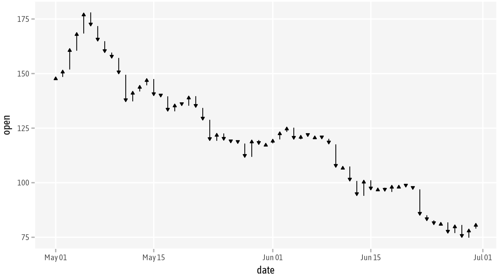
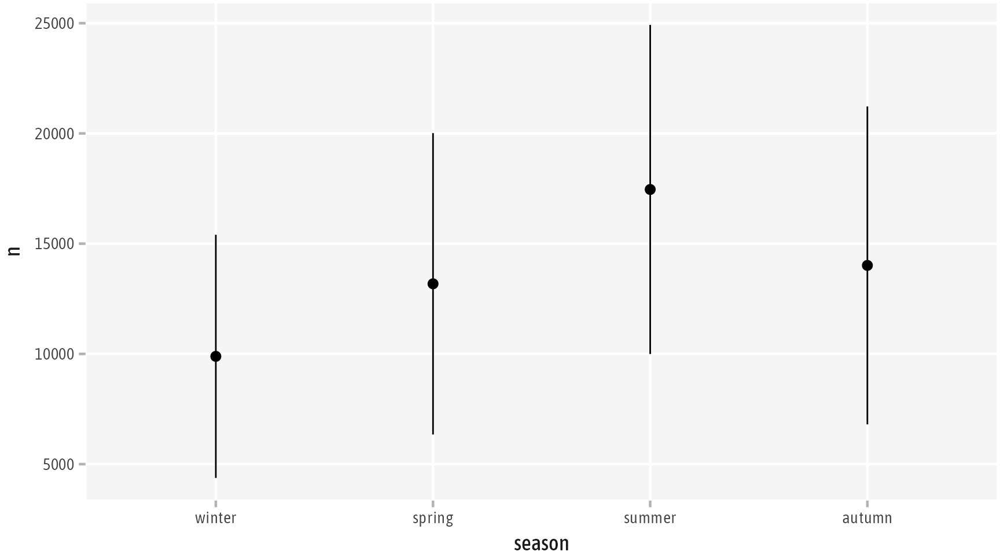
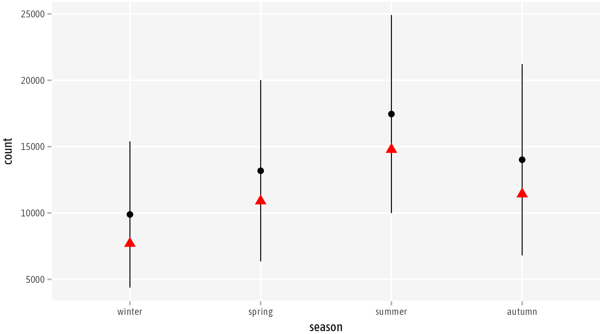

Chapter 7 Working with Layers
Layers represent the data in our visualizations, specifying the visual representation of variables such as points, lines, or bars. Internally all layers are created by the layer() function. A layer consists of
- the data set (
data) - a mapping of variables to aesthetics (
mapping) - a statistical transformation (
stat) - a geometric representation (
geom) - a positional adjustment (
position)
ggplot() +
layer(
data = bikes,
mapping = aes(x = temp, y = humidity),
geom = "point",
stat = "identity",
position = "identity"
)
FIGURE 7.1: A simple scatter plot of humidty versus temperature created with the layer() function by passing the data, the positional aesthetic, a statistical transformation, a geomtric representatio n and the positional adjustment.
We map the variables of the specified data the positional aesthetics x and y. The data and aesthetic mappings are often specified in the initial ggplot() call. These specifications are then passed to all layers.
ggplot(data = bikes, mapping = aes(x = temp, y = humidity)) +
layer(geom = "point", stat = "identity", position = "identity")Throughout the book, I am matching the argument names data and mapping in the initial ggplot() call implicitly: ggplot(bikes, aes(x = temp, y = count)). This is common practice and is used in many scripts, tutorials, and examples featuring ggplot2 code.
7.1 Predefined Layers
To simplify your life, ggplot2 features a long list of predefined individual layers with sensible default inputs for geom, stat, and position. Focusing on either the geometrical representation or the statistical transformation, these functions start with geom_*() or stat_*().
7.1.1 Geometrical versus Statistical Layers
For all geometries and statistical transformation there are respective geom_*() and stat_*() functions. This means, you can usually go both routes to create the same chart. The following codes produce the same output as the layer() function above, a scatter plot of humidity versus temperature:
ggplot(bikes, aes(x = temp, y = humidity)) +
geom_point() ## with `stat = "identity", position = "identity"`
ggplot(bikes, aes(x = temp, y = humidity)) +
stat_identity() ## with `geom = "point", position = "identity"`Similarly, geom_bar() and stat_count() produce a bar chart with the height encoding the count per variable. For both, the default positional adjustment is "stack". Mapping a variable to the fill aesthetic thus creates stacked bar charts:
ggplot(bikes, aes(x = weather_type, fill = year)) +
geom_bar() ## with `stat = "count", position = "stack"`
ggplot(bikes, aes(x = weather_type, fill = year)) +
stat_count() ## with `geom = "bar", position = "stack"`
FIGURE 7.2: A stacked bar chart of the number of observations per weather type and time of the day, created with the predefined layers geom_bar() or stat_count().
Maybe you have wondered at some point, why you can use geom_smooth() and stat_smooth() interchangeably to create a conditional smoothing? This is because both call the same underlying layer function with the default arguments: stat = "smooth" which computes the fitted line and geom = "smooth" which draws the line and ribbon to visualize the mean and standard error, respectively.
ggplot(bikes, aes(x = temp, y = humidity)) +
geom_smooth() ## with `stat = "smooth"`
ggplot(bikes, aes(x = temp, y = humidity)) +
stat_smooth() ## with `geom = "smooth"`
FIGURE 7.3: A conditional smoothing of humidity and temperature created with the predefined layers geom_smooth() or stat_smooth().
7.1.2 Layer Variants
Some predefined layers just have subtle differences to accommodate different use cases. For example, you can connect points either in the order of the x variable as a line graph or time series chart (geom_line()) using the shortest path or as a stairstep plot (geom_step()). Alternatively, you can connect the observations in order they appear in the data object (geom_path()) which allows to draw connected scatter plots to visualize trajectories.
bikes_jul15 <- bikes |>
filter(year == 2015, month == 7, day_night == "day") |>
arrange(weather_type)
ggplot(bikes_jul15, aes(x = date, y = temp, color = date)) +
geom_line()
ggplot(bikes_jul15, aes(x = date, y = temp, color = date)) +
geom_step()
ggplot(bikes_jul15, aes(x = date, y = temp, color = date)) +
geom_path()
FIGURE 7.4: The three plots illustrate the different predefined geometrical layers that can be used to draw lines between observations. The colored dots illustrate the order in which the observations have been connected. While geom_line() (left) and geom_step() (middle) connect the points in order of the x axis, geom_path() (right) respects the order of the data and thus allows to move “back” on the x axis.
Other exemplary variants of geometrical layers are:
geom_point()andgeom_jitter()– When used with one qualitative positional variable, jittering allows to avoid overplotting by adding random noise along the qualitative axis (see next chapter).geom_bar()andgeom_col()–geom_bar()creates bars that represent the count or frequency of different categories in the data (onlyxory) whilegeom_col()can be used to scale the height based on a quantitative variable (xandy).geom_density2d()andgeom_density2d_filled()– Both layers compute smooth 2D density estimates, one representing the result as contour lines and the other as filled areas.
7.2 Changing Layer Defaults
The settings of the predefined layers are chosen with care. However, sometimes one needs to adjust the argument inputs of a layer to adjust its behavior. In the following we explore how we can make use of customizing the geom, stat, and position.
7.2.1 Positional Adjustments
While the stacked bars shown in Fig. 7.2 emphasize the total counts per weather type, a grouped bar chart simplifies comparison between groups. To change the default behavior of geom_bar() or stat_count(), which use position = "stack" as default, we set the position to "dodge".
FIGURE 7.5: The bar chart of weather types per time of the day as dodged bars by setting the position to "dodge", overwriting the default "stack".
The quoted "dodge" is a shortcut to the function position_dodge(). If you want to adjust the default dodge behavior, you can specify arguments passed to the position function. For example, we might want to display all bars with the same width, independent of the presence of day and night (i.e. there is only one, very wide bar for snowfall as there are only day observations). We can fix this by passing preserve = "single" to the position_dodge() function. While this places the snowfall bar on the left, position_dodge2() centers it. At the same time, it adds some spacing between grouped bars when decreasing the bar width:
ggplot(bikes, aes(x = weather_type, fill = day_night)) +
geom_bar(
width = .7, ## more narrow bars
position = position_dodge2(
preserve = "single" ## consistent bar width
)
)
FIGURE 7.6: The bar chart of weather types per time of the day as dodged bars by setting the position to "dodge", overwriting the default "stack".
Another common use case of positional adjustments is the so-called jittering of points by adding random noise to the qualitative axis. It is a simple approach to deal with overplotting in case of dot strip plots:
ggplot(bikes, aes(x = season, y = count)) +
geom_point(position = "jitter", alpha = .3)
ggplot(bikes, aes(x = season, y = count)) +
geom_point(position = position_jitter(width = .3), alpha = .3)
ggplot(bikes, aes(x = season, y = count)) +
geom_jitter(width = .3, alpha = .3)FIGURE 7.7: identity versus jitter
7.2.2 Modify Transformations and Geometries
We can also overwrite the default stat in geometrical layers or the default geom in statistical layers. For example, changing the geom in stat_smooth() to pointrange turns the smoothed line and ribbon in Fig. 7.3 into points with vertical lines representing the confidence intervals:
Again, we could rewrite the code by using the respective geometrical layer geom_pointrange() and setting the default statistical transformation "identity" to "smooth".

FIGURE 7.8: The conditional smoothing as so-called pointranges displaying the predicted mean as points and the confidence intervals as vertical lines by overwriting the default geom in stat_smooth() or using the respective geometrical layer with stat = "smooth".
As you have already learned, geom_point() is usually used to draw scatter plots or dot strip plots showing the raw data. By replacing the default (non-)transformation "identity" with "count", we can draw the overall count per group. In the following example, the points encode the counts per period of the day (color = day_night) and weather type (x = weather_type). The resulting plot is an alternative to the bar graph in Fig. 7.2 and Fig. 7.5 and could be as well created by overwriting the default geom = "bar" with geom = "point". Note that in that case we also need to adjust the position, the counts are stacked otherwise!
ggplot(bikes, aes(x = weather_type, color = day_night)) +
geom_point(stat = "count", size = 5)
## this leads to "wrong" results as counts are cumulative (stacked)
ggplot(bikes, aes(x = weather_type, color = day_night)) +
stat_count(geom = "point", size = 5)
ggplot(bikes, aes(x = weather_type, color = day_night)) +
stat_count(geom = "point", position = "identity", size = 5)
FIGURE 7.9: By overwriting the default stat method of geom_point() with "count", we can alter its behaviour to calculate counts per group before plotting the data.
7.3 Positional Aesthetics
Many geometrical shapes work with one or two positional arguments, namely x and/or y, to represent your data. Some other geometries need more positional arguments to be drawn, such as corner points of rectangles or start and end coordinates of segments and curves. The data type of the positional variables influences the selection and behavior of geometrical layers.
7.3.1 Know Your Data Types
geom_point() is a versatile geometry that works with all combinations of quantitative and qualitative data mapped to x and y. When passing two qualitative variables, it creates a scatter plot as in Fig. 7.1. However, it can also be used to draw a dot strip plot when combining a quantitative and a qualitative variable (cf. Fig. 7.9), or to draw a heat bubble matrix when using two qualitative variables with the point size being mapped to a numeric variable.
Other geometries expect a certain combination of variables. Mapping the wrong data type to positional aesthetics can lead to unexpected behavior or may even return an error. To highlight the importance of passing the correct data types, let’s consider two examples.
Box-and-whisker plots (or short “box plots”) summarize the distribution of quantitative data, usually across multiple categories. By adding geom_boxplot(), ggplot2 will calculate a box plot for each category if the type is character, logical, or factor but only a single box plot otherwise:
## creates four boxplots as `season` is a factor
ggplot(bikes, aes(x = season, y = count)) + geom_boxplot()
## creates two boxplots as `is_weekend` is logical
ggplot(bikes, aes(x = is_weekend, y = count)) + geom_boxplot()
## creates a single boxplot as `temp` is numeric
ggplot(bikes, aes(x = temp, y = count)) + geom_boxplot()
FIGURE 7.10: The number of indiviudal box-and-whisker plots created bygeom_boxplot() depends on the type of variable mapped to x. In case of categorical variables such as season or is_weekend, the function creates as many boxplots as there are categories. For quantitative variables such as temp, only a single boxplot is calculated covering the complete numerical range.
We can force ggplot2 to group the quantitative variable into equal numerical ranges, so-called bins. One approach is using the group aesthetic. In our case, we can create bins with a width of 1°C by rounding the numbers to the next smallest integer:
ggplot(bikes, aes(x = temp, y = count, group = floor(temp))) +
geom_boxplot(varwidth = TRUE) ## box width is proportional to sample sizeWe can also create groups by adjusting the variable mapped to x directly. To create bins with equal ranges, we wrap the variable inside cut_interval(). The corresponding cut_number() creates groups with equal number of observations (and potentially unequal ranges).
ggplot(bikes, aes(x = cut_interval(temp, 6), y = count)) +
geom_boxplot(varwidth = TRUE)
ggplot(bikes, aes(x = cut_number(temp, 6), y = count)) +
geom_boxplot(varwidth = TRUE)![Three different ways to discretize the numeric x variable, here `temp`, to create multiple box plots. The upper row makes use of the `group` aesthetic in combination with `floor(temp)` to create bins of a width of 1°C. The lower row uses the `cut_*()` functions discretize the numeric variable into categorical. Here, we create four groups with equal range (bins of approx. 7.35°C, left) and equal number of observations (right), respectively. In all plots, the box widths are proportional to the number of observations to highlight the resulting group sizes of the different approaches.](bookdown_files/figure-html/07layerPositionalTypeBoxplotCut2-1.png)
FIGURE 7.11: Three different ways to discretize the numeric x variable, here temp, to create multiple box plots. The upper row makes use of the group aesthetic in combination with floor(temp) to create bins of a width of 1°C. The lower row uses the cut_*() functions discretize the numeric variable into categorical. Here, we create four groups with equal range (bins of approx. 7.35°C, left) and equal number of observations (right), respectively. In all plots, the box widths are proportional to the number of observations to highlight the resulting group sizes of the different approaches.
Histograms show the distribution of numeric variables as binned bars. The corresponding geom_histogram() creates these binned bars with stat = "bin" and geom = "bar" for quantitative variable. But it fails when passing qualitative variables as calculation of bins across categories is not meaningful. In case of a qualitative x aesthetic, geom_bar() with the default stat = "count" creates the desired bar chart showing counts per category.
## works as `temp` is numeric
ggplot(bikes, aes(x = temp)) + geom_histogram()
## fails as `is_weekend` is categorical
ggplot(bikes, aes(x = is_weekend)) + geom_histogram()
# Error: `stat_bin()` requires a continuous x aesthetic
## create bars with discrete x aesthetics
ggplot(bikes, aes(x = is_weekend)) + geom_bar()FIGURE 7.12: A histogram bins a quantitative variable, showing counts of obersvations per group (left). As qualitative data is already grouped, a regular bar chart is used to display counts per category (right).
7.3.2 Multiple Positional Aesthetics
Other geometries need more than two positional aesthetics. geom_linerange() draws horizontal or vertical lines based on xmin and xmax or ymin and ymax, respectively. Let’s load some stock data and show the change of opening versus closing price over time:
coins <- readr::read_rds("./data/crypto_cleaned.rds") |>
dplyr::filter(year == 2018, month %in% 5:6, currency == "litecoin")
ggplot(coins, aes(x = date, ymin = open, ymax = close)) +
geom_linerange()That’s great but in addition I would like to indicate the direction of change in daily prices. For that we can use geom_segment() which allows to add arrow heads to straight lines. The segments are not restricted to vertical or horizontal and thus take four positional arguments: x and xend as well as y and yend. For our use case, we map the same variable, namely date, to both x coordinates. We then can define the arrow to be drawn by passing the arrow() function to the arrow argument inside geom_segement().
ggplot(coins, aes(x = date, xend = date,
y = open, yend = close)) +
geom_segment(
arrow = arrow(
type = "closed", ## draw an triangle as arrow head
length = unit(.3, "lines")) ## size of the arrow head
)
The geom pointrange (that we have also used in the smoothing example) needs four positional aesthetics as well: in addition to the x and y positions, we have to specify the range as well as either xmin and xmax or ymin and ymax.
library(dplyr)
bikes_season <-
bikes |>
group_by(season) |>
summarize(n = mean(count), sd = sd(count))
ggplot(bikes_season,
aes(x = season, y = n, ymin = n - sd, ymax = n + sd)) +
geom_pointrange()
7.4 Statistical Summaries
You can also use stat_summary() and let ggplot2 do the transformation of the raw data. By default, stat_summary() uses a pointrange geometry with the three positional aesthetics representing mean ± standard error.
Passing a set of functions to the arguments fun, fun.min and fun.max we can modify the range:
ggplot(bikes, aes(x = season, y = count)) +
stat_summary(
fun = "mean",
fun.min = function(y) mean(y) - sd(y),
fun.max = function(y) mean(y) + sd(y)
)Alternatively, a function that returns the required aesthetics can be specified as input for fun.data. As the function mean_sdl() computes the mean ± 2 times the standard deviation, we have to adjust the function argument mult as well. Either we pass it to the fun.args argument or specify it as function argument directly.
ggplot(bikes, aes(x = season, y = count)) +
stat_summary(
fun.data = "mean_sdl",
fun.args = list(mult = 1)
)
ggplot(bikes, aes(x = season, y = count)) +
stat_summary(
fun.data = function(y) mean_sdl(y, mult = 1)
)This seems to hard to remember? The nice thing is that all solutions are valid, just pick your favorite (and forget about the rest as long as there is no particular reason to use it).
Similarly, we can also overwrite the default geometry, for example to display the median count for each season by adding a red triangle:
ggplot(bikes, aes(x = season, y = count)) +
stat_summary(
fun.data = function(y) mean_sdl(y, mult = 1)
) +
stat_summary(
geom = "point",
fun = "median",
color = "red",
shape = 17,
size = 4
)
The stat_*() functions and especially stat_summary are incredible powerful and often a neat way to create all kind of chart types. Let’s use a combination of summaries to draw a dumbbell chart of temperature ranges across months.
ggplot(bikes, aes(y = month, x = temp)) +
stat_summary(
geom = "linerange",
fun.min = "min",
fun.max = "max"
) +
stat_summary(
geom = "point",
fun = "range",
size = 3
)We can also use stat_summary() to add the actual minimum and maximum values to our plot. The geom text in combination with the label aesthetic adds data-related labels.